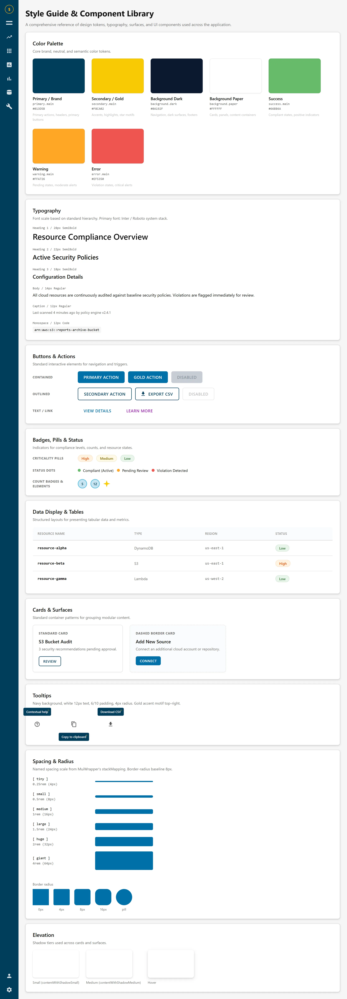
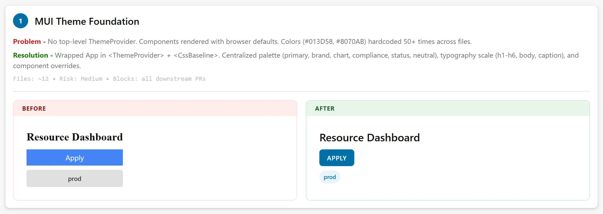

Capital One
UI Consistency
The app had grown a dozen local dialects of the same interface: inline styles instead of tokens, four table layouts, three different ways to say “no data”. I inventoried it, designed the shared layer underneath, and cut a 231-file, 12,600-line change across twelve pages into twenty-four pull requests a human could actually review, with a Cypress suite under it so review was not the only thing standing between a refactor this size and a regression.
Nobody set out to build four table layouts
Each one was a reasonable local decision. A team needed a table, the existing one was close but not right, and copying it was ten minutes against a week of negotiation. Enough reasonable local decisions later, nobody could tell you what the product’s table looked like, because the honest answer was that it depended on the page.
The cost was not really aesthetic. It was that every change had to be made in every copy, and the last copy was always the one somebody forgot. A shared layer is worth building at the point where keeping things in sync by hand costs more than the abstraction does, and we were well past it.

Same control, different radius, different weight, different idea of what a button is.
Counting what was actually there
The instinct is to design the target state and then go find everything that does not match it. I did the opposite: inventoried every variant already shipping, with no judgement attached, before proposing anything.
That order mattered more than it sounds. Two of the variants I would have deleted on sight turned out to be load-bearing, solving a real constraint the canonical component could not. They became part of that component’s API rather than exceptions to it. Designing first and reconciling later produces a system that is correct in isolation and wrong in the product, which is the usual way these fail.
The inventory became a page. Every component that had drifted got a card: what was wrong, what replaced it, how many files it touched, what it blocked. Reviewers read that page before they read a diff, and so did the people who had written the variants I was proposing to delete.

One theme, no inline styles
The foundation is a single theme provider wrapping the app, with tokens for colour, typography, spacing and radius. Components inherit from it instead of carrying their own inline values, and the fifty-odd hardcoded hex literals scattered through the tree stopped being editable one file at a time.
Underneath that, the shared pieces: one toolbar with search, filter chips and actions in a single row; one footer with the count on the left and export on the right; real empty, error and not-found states instead of the inline “no data” text that had been written separately on every page. Tables lost twenty pixels of row height, gained proper header treatment and zebra striping, and dropped to a subtler border.
The filter chips are the detail I am most pleased with. They show at full width rather than truncating, overflow collapses into a +N chip, the dropdown stays open while you are still choosing, and typing hides the chips so you get a clean search field. Four small decisions, all of them about not interrupting someone mid-thought.

Twenty-four pull requests, in dependency order
231 files and 12,600 lines is not a reviewable change. It is a change that gets approved without being read, which is the same as not being reviewed, on a diff touching every page in the app.
So it went out as twenty-four pull requests of fifteen files or fewer, ordered so each could merge on its own. The theme provider had to land first because everything else assumes it. The shared table and filter components went second because the page-level work consumes them. After that the rest were independent and could go in parallel, in any order, by whoever had time.
The foundation PR contained no behavioural changes at all. Visual consistency only. That was deliberate: the riskiest change in the sequence is the one everything depends on, so it should also be the one with the least in it.

Size, risk and dependency, on one line, next to the change rather than in a ticket.
The net under the refactor
A refactor makes a promise that is hard to check: nothing behaves differently. On a diff this wide, nobody can hold that in their head, and “it looked fine when I clicked around” is not evidence. It is the absence of it.
So the Cypress suite grew alongside the change rather than after it, to roughly 85% of the critical flows: the paths people take every day, asserted before the shared components went in and re-run after each pull request. Where a spec had to change, that was the signal to stop and look, because a passing test that needed rewriting is a behaviour change wearing a costume.
It shipped with no regressions, which is the claim I would otherwise have had no honest way to make.
One product, one language
Every page now renders from one theme, and a change to a shared component is one edit rather than a search-and-replace across the app.
The result I care about most is quieter than the file count: design review stopped spending its first ten minutes establishing which version of a component we were looking at. The system’s real output is the argument it makes unnecessary.
231 files · 12,600 lines · 24 pull requests
Regressions after release None